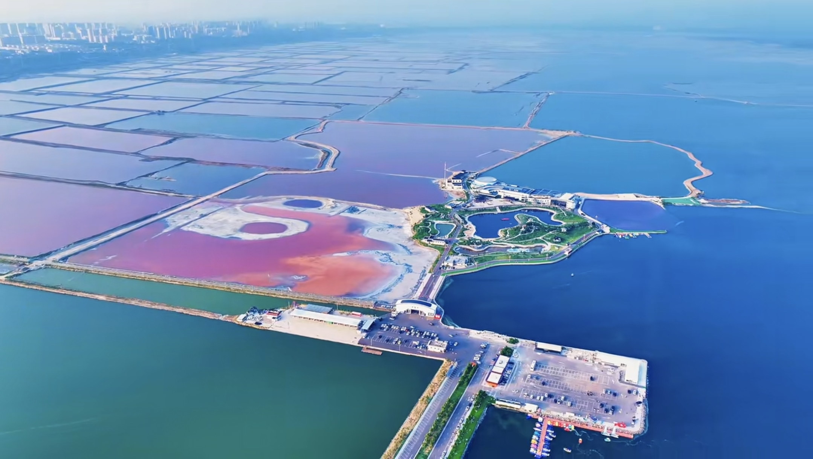

运城古称河东，位于山西省西南部，地处晋、陕、豫黄河金三角地区。 这里历史悠久，文化底蕴深厚，是中华文明的重要发祥地之一。
运城因“盐运之城”而得名，盐湖文化、关公文化、黄河文化都是这座城市的重要名片。 对我来说，运城不仅是一座城市，更是家乡记忆和成长印象的集合。

运城盐湖被称为“中国死海”，是运城非常有代表性的自然景观。
解州关帝庙是关公文化的重要代表，也是运城的文化名片之一。
运城有黄河、中条山、古建筑和丰富的民俗文化，适合慢慢感受。
| 景点名称 | 所在地区 | 推荐理由 | 适合人群 |
|---|---|---|---|
| 运城盐湖 | 盐湖区 | 自然风光独特，适合拍照打卡 | 游客、学生、摄影爱好者 |
| 解州关帝庙 | 盐湖区解州镇 | 关公文化代表，历史氛围浓厚 | 历史文化爱好者 |
| 鹳雀楼 | 永济市 | 因“白日依山尽，黄河入海流”而闻名 | 学生、诗词爱好者 |
| 普救寺 | 永济市 | 与《西厢记》故事有关，文化气息浓 | 文学爱好者、游客 |
下面可以放一段运城宣传视频，也可以放你自己拍摄的家乡短片。
如果你也想了解运城，可以填写下面的小表单。